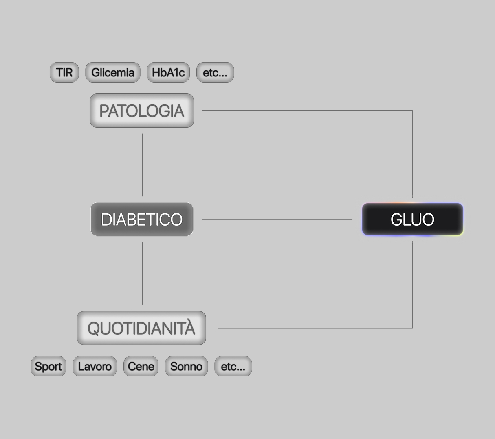

GLUO originates from an analysis of the burden of treatment associated with the management of chronic conditions,
particularly diabetes. Research shows that current personal monitoring systems require continuous data collection and
interpretation, increasing stress, anxiety, and confusion.
This is experienced by patients as an additional cognitive load that adds to the daily “work” of being ill.
GLUO is a digital solution designed to ease the management of diabetes through the intelligent
generation and interpretation of monitoring data.
Its goal is to transform complex data into clear and useful information for the everyday life of people with diabetes.

The app integrates an artificial intelligence
system that supports users in daily decisions, from physical activity to nutrition.
Through features such as interpreter, chat, archive, and camera, GLUO provides personalized suggestions,
reducing uncertainty and cognitive load.
The project is based on desk research and field research conducted with a sample of users,
revealing recurring issues: difficulty interpreting data,
lack of continuous specialist support, mental calculations before meals, and social discomfort caused by device alarms.